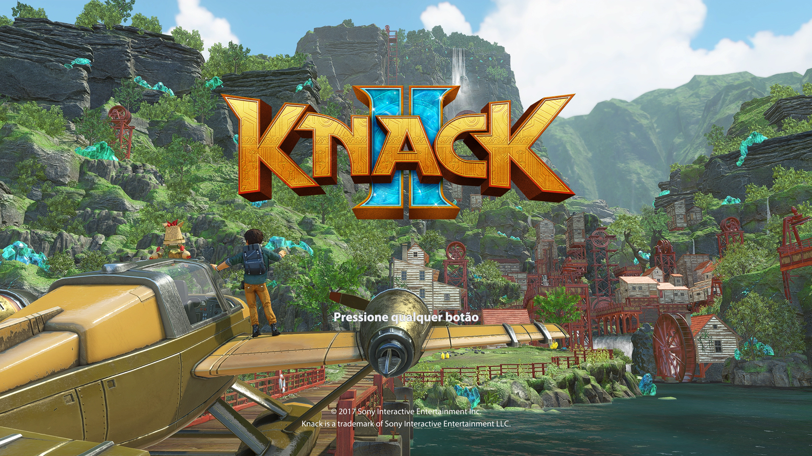
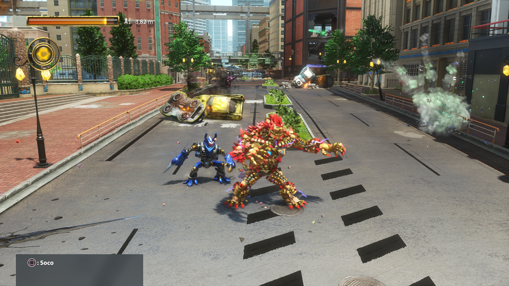

Playable game section
Boot, menus, movement, and combat have been tested; the owner reports progressing into Chapter 2.
An independent Knack II (Knack 2) PC port featuring Vulkan rendering, a Windows launcher, and local two-player co-op. The project owner reports reaching Chapter 2 in local co-op without problems in that session; it remains an experimental alpha.


Boot, menus, movement, and combat have been tested; the owner reports progressing into Chapter 2.
The owner reports playing cooperatively through reaching Chapter 2, without problems observed in that session. Two controllers are required.
The full campaign is not validated. Graphics bugs, crashes, and Vulkan device loss may occur.
These statements combine the original alpha v0.10 release notes with a subsequent first-hand gameplay report from the project owner. Reaching Chapter 2 is not certification of the full campaign or all hardware. Read the detailed release notes.
Requirements: recent 64-bit Windows, Vulkan-compatible GPU with updated drivers, and your own Knack II CUSA08014 v01.01 PS4 dump. The Windows ZIP includes its needed runtime dependencies; separate installation of Python, Qt, or MSYS2 is not required.
Knack II.exe.eboot.bin, game.elf, sce_sys, and sce_module, then validate it.For file checksums, release provenance, and troubleshooting, see the release assets and the README.
Versão alpha experimental para Windows 64 bits, com gráficos Vulkan, launcher e cooperativo local para dois controles. O proprietário relatou ter jogado normalmente em cooperativo até chegar ao capítulo 2, sem problemas observados nessa sessão. A campanha completa não foi validada. Ainda podem ocorrer erros gráficos, travamentos e falhas do Vulkan.
É necessário ter seu próprio dump de Knack II, código CUSA08014, versão 01.01. O jogo não acompanha o download.
Knack II.exe.Veja o guia completo em português e as notas da release antes de instalar.